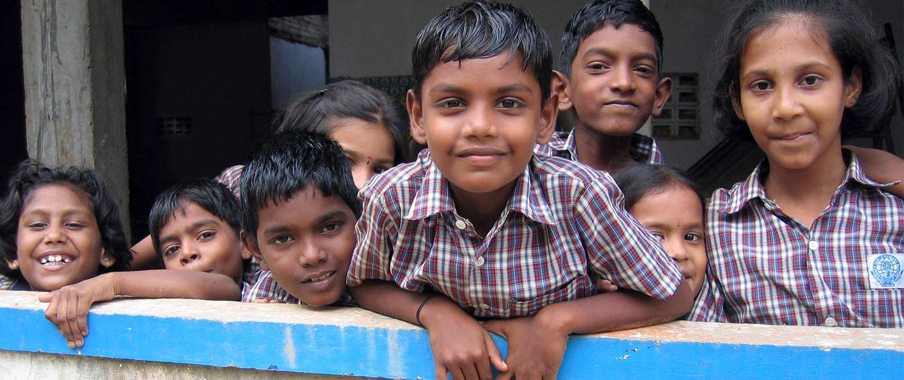

CELEBRATION OF INTERNATIONAL LITERACY DAY BY “START EARLY: READ IN TIME” PROJECT

Start Early: Read in Time project, under Girls Education Program, celebrated International Literacy Day in the project area to highlight the importance of literacy for children and to renew the commitment towards lifelong learning for all in context of sustainable development goals. To mark literacy day, specific events were held at school, block and district level on 8th September 2017 and on subsequent days in which teachers, children, education functionaries and community people participated.
The district level discussions were held in Mayurbhanj, Bahraich, Shrawasti and Balrampur district in Odisha and Uttar Pradesh in which government functionaries discussed literacy. These events were held in partnership with SSA in all districts. In Balrampur, SSA organised a rally, supported by CARE, and flagged by local MLA Shri Palturam. In the rally, children and teachers held slogans focussed on building awareness about literacy. At District Institute of Education Training (DIET), Balrampur, a workshop was held to deliberate on challenges and solutions to improve literacy. In the workshop, principal, lecture, trainers, and others shared their vision of literacy and challenges associated. At Mayurbhanj district, a similar event was held having a focus on literacy in the context of children. At the event, a Literacy Flag was hoisted by the Chief Guest Mr. Bibekanand Sahu, the District Project Coordinator, SSA, Mayurbhanj. Discussion in the workshop was built upon the learning(s) of the Start Early: Read in Time Project, where it was shared that
Literacy is not an end but is a means to most other learning and social and economic empowerment.
Oral language and literacy are overlapping domains used extensively in both classroom settings and in literate lives for communication, expression and knowledge generation.
Listening, speaking, reading and writing develop concurrently rather than sequentially
Conceptions of literacy must build upon oral language skills of learners rather than just as a process of encoding and decoding of the script (with or without meaning).
Young children should be provided with opportunities to participate as emergent readers and writers for an extended period (3-6 years of age) before being expected to develop into conventional readers and writers (6-8 years of age).
At this event, bilingual reading materials and reference materials were shared with education functionaries (district project coordinator, Tribal Coordinator, the ADEO, and DIET teacher educators) which were hugely appreciated for creating such useful and relevant materials for children. The workshop was attended by education functionaries, block level resource persons, and teachers.
Such literacy events were also held in most intervention blocks, focussed on highlighting the importance of literacy amongst teachers and education functionaries. A discussion with education functionaries was held in all blocks in Mayurbhanj where over 70 people participated. In Uttar Pradesh, at the block level, various kind of activities were organised, for example- a signature campaign, rally, and discussion with teachers.
International Literacy day was also celebrated with children and teachers in most schools in all districts to spread the significance of literacy. In Odisha, the event was celebrated in 647 schools where over 19410 children participated in the celebration, which included 9647 boys and 9763 girls. A guideline for conducting language activities to celebrate the event through the system was shared with schools. The event was also organized in non-project areas. Teachers organized activities like organization of rally, Drop everything and Read (everyone reading), Making picture based on stories, Writing up stories based on picture, Storytelling and Poem recitation
In Uttar Pradesh, teachers also organized a discussion on literacy in the digital world and prepared puzzles.
These events were also organized around community libraries as well.